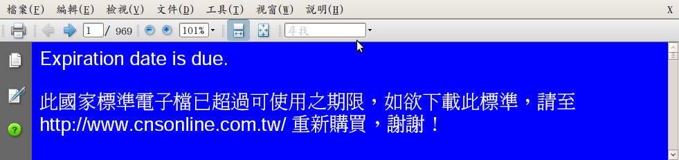

CNS15251 (odf)：國家存檔有標準，政院政策沒公文？
建立日期 2010-04-29 19:41 最近更新在 2010-09-08 21:59
作者是 洪朝貴
與國際接軌的開放檔案格式 odf 早就成為國家標準；行政院卻遲未發文給所屬單位。耐心等待一年多之後，格主購得 CNS15251 官方文件，公佈於此，並教大家如何移除 (remove) 這個 pdf 檔的 drm。藉此行動刺激行政院作出回應。也呼籲機關 / 行號 / 學校等等公、私及第三部門團體， 請映射 CNS15251，廣加散佈，並逐步改用 odf 以支持國家標準。
(2010/04/25 加上破解 pdf 的 drm 的說明；4/28 加一點後記。)
一個機關 / 學校 / 公司 / 組織，如果自我期許永續經營，必不能躲避這些問題︰「本單位的電子檔案能否永久保存？抑或本單位開啟自身歷史存檔的能力，受制於特定廠商？本單位對於自身的壽命是否以行動自我設限，預期將短於特定軟體廠商？」
一個政府、一個國家更是如此。開放檔案格式 Open Document Format（含 odt / ods / odp 等等），在 2006 年成為國際標準之後，已有 十八個國家、八個地方政府宣佈採用 odf 作為官方公告及永久存檔的格式。我國的經濟部標準檢驗局，也以 odf 為基準，制定國家標準 CNS 15251，並於去年 1 月 22 日公佈。格主請朋友到這裡購得檔案，並做了幾個備份， 在此與大家分享。請踴躍複製映射，並在留言處提供下載網址。
| md5sum |
映射站: |
OFSET |
朝陽資管 |
4shared |
aDrive |
| a58720bdca5ff0d19e0f4da909d9b121 |
原始版本: |
V |
V |
V |
V |
| 14f868a93b77a45ee3b5844888ebb50d |
移除 DRM 版本: |
V |
V |
V |
V |
打開 「原始版本」 的朋友們會注意到第一頁最下面有一句： 本標準非經本局同意不得翻印。
有人會擔心：「你我有權力複製映射嗎?」「這不是在挑戰公權力嗎?」
我倒要反問：「標準局有權力禁止翻印嗎?」「這不是同時在挑戰全球共創共享的網路文化、中華民國所有納稅人、 與標準局自身存在的意義嗎？」
根據維基百科，odf 正式的國際名稱 ISO/IEC 26300:2006 與 OASIS 的 Committee Specification OpenDocument 1.0 （第二版） 的內容一模一樣。找到後者的官方網頁， 進入實際內文。與我上傳的文件，所有段落章節有著分毫不差的一對一對應關係。基本上 CNS-15251 就是 ODF 1.0 第二版的中文翻譯。也就是說，CNS-15251 只是一份 「翻譯」 形式的衍生著作；標準局並不是該文件的最重要的著作權人。
首先替標準局澄清一下：這並沒有侵犯著作權－－請見英文原文末附錄 G。簡單講：歡迎複製、禁止改作、請保留授權聲明。有點類似CC 授權的 cc-by-nd。 但授權聲明中對 "禁止改作" 提出但書，特別允許 「翻譯」 的行為。所以經濟部標準局如實翻譯此文件，不僅沒有侵犯著作權，而且是值得肯定的事－－要與國際接軌，若有不同意見，應該向國際組織反應，要求修改國際標準，而不是自己修改；若沒有，就應該像標準局這樣如實照抄，才能保證相容性。這一切都值得肯定。
唯一的問題是標準局加的 「禁止翻印」 那段文字。
- 第一，標準局並非原著作權人，何來禁止權力？原始文件歡迎複製分享；標準局這麼做，有違全球共創共享的網路文化。
- 第二，衍生創作部分（翻譯） 的工作，由全國納稅人繳錢，誰授權標準局禁止全民使用？標準局這麼做，有違中華民國所有納稅人的託付。
- 第三，一份國家標準文件，卻被 「禁止翻印」，這如何能夠 「維持自由公平交易以促進國內產業發展」？如何能夠 「促進社會福祉」？（請見末頁標準局加的文字）標準局這麼做，抵觸自身存在的意義。
所以，請不要擔心，請用力映射吧。標準局沒有立場找任何人麻煩。如果標準局敢找誰麻煩，第一個需要
後記：根據文件購買點所說，這份文件的保存期只有七天。那是 DRM 的意思囉？國家標準文件用遙控數位枷鎖封鎖？這也是一個值得探討的問題，另文再討論。無論如何，放在網路上的檔案當然不會變；我在 linux 下用自由軟體 evince 可以看，所以即使日期過了，也不必擔心 DRM 的問題。

超過七天後，用 acrobat 開，果然看到上述訊息。沒關係，通常你的 linux 應內建安裝 ghostscript 與 poppler-utils 這兩個套件，所以可以用這兩個指令：
pdftops CNS-15251.pdf 1.ps ps2pdf 1.ps CNS-15251-drm-free.pdf
或另外安裝 pdftk 套件，就只需要一個指令：
pdftk CNS-15251.pdf cat 1-end output CNS-15251-drm-free.pdf
就可以把它變成沒有 「遙控數位枷鎖」 的檔案。註：若您把這段 「解除 pdf drm」 的方法刊在他處，請註明出處 ;-)
為了進一步修改文字，上網搜尋 「linux edit pdf」 與 「linux edit postscript」（ 因為 pdf 是 postscript 的進化版），試過 pdfedit、scribus、flpsed 但都無法成功輸入中文。最後只好（大致）按照這一篇的做法，把第一頁變成圖片來處理。
所以原始版裡面的 "本標準非經本局同意不得翻印"，到了 「移除 DRM 版本」 裡面，變成：" 支持國家標準，請複製、 散佈本文件。請搜尋 「CNS15251 公文」"。下一步就是看誰願意發公文給政府單位（特別是一定要給標準局、法務部、智財局），送他們一張光碟，放進這兩個 pdf 檔和這篇文章。看看標準局要拿那一條法律來告我吧 XD
◎ 作者：洪朝貴，目前任職於朝陽科技大學資管系。本文已徵得洪朝貴老師同意轉載，原文請見其部落格 。
◎ 本篇文章為個人意見，不代表自由軟體鑄造場電子報立場。


評論